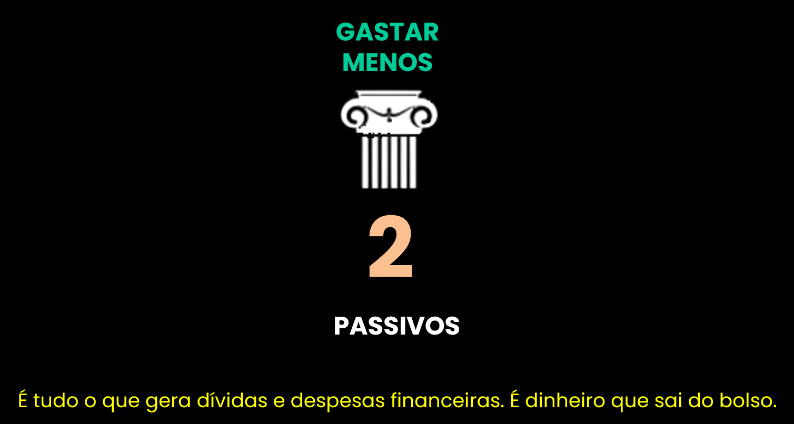
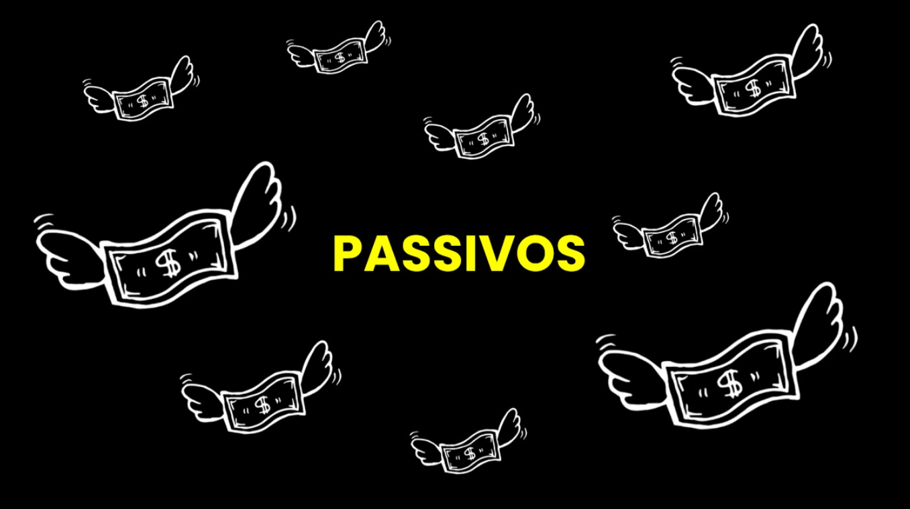

2º Pilar da Liberdade
Publicado em 19 de agosto de 2025 - Gabriel Cossare Bragion
PASSIVOS | COMO GASTAR MENOS
Segundo pilar da Liberdade Financeira
Definição de Passivos
É tudo o que gera dívidas e despesas financeiras. Ou seja, é dinheiro que sai do bolso.
Exemplo clássico: comprar um carro. Além da compra, surgem custos como:
- IPVA
- Licenciamento
- Seguro
- Estacionamento
- Gasolina
Carro é passivo.
TUDO QUE TIRA $$$ DE VOCÊ É UM PASSIVO.
Outros exemplos de passivos comuns:
- Aluguel
- Condomínio
- IPTU
- Água
- Energia
- Gás
- Celular
- Internet
- Streaming
- Alimentação
- Café, barzinho
- Academia
- Presentinhos
- Parcelas: moto, carro, roupa, calçado, óculos, acessórios, viagem
- Pet Shop
- IRRF
Se quiser, comente no fim desta matéria o que mais pode tirar dinheiro do nosso bolso.
Soluções Práticas
- Reduzir: trocar ou renegociar despesas. Existem fornecedores mais baratos? Promoções?
- Cortar: eliminar gastos desnecessários. Preciso mesmo de tantos streamings ou parcelas?
- Otimizar: tornar custos mais eficientes. Exemplo: dividir carona, levar comida de casa.
- Planejar: organizar e antecipar gastos futuros de forma controlada.
Quem agradece por economizar mais? Suas economias e o seu "eu" do futuro.
Você não consegue visitar seu "eu do futuro". Mas ele vai te agradecer por trocar um gasto de hoje pela liberdade financeira de amanhã.

DEIXE UM COMENTÁRIO